Version: siehe Hilfe → Version in der
Anwendung
Autor: Jörg Körner, DK8DE
Download & Updates: GitHub
Releases
Englische Version: UserManual_EN.md
Screenshots: Ordner docs/screenshots/de/ —
siehe README dort
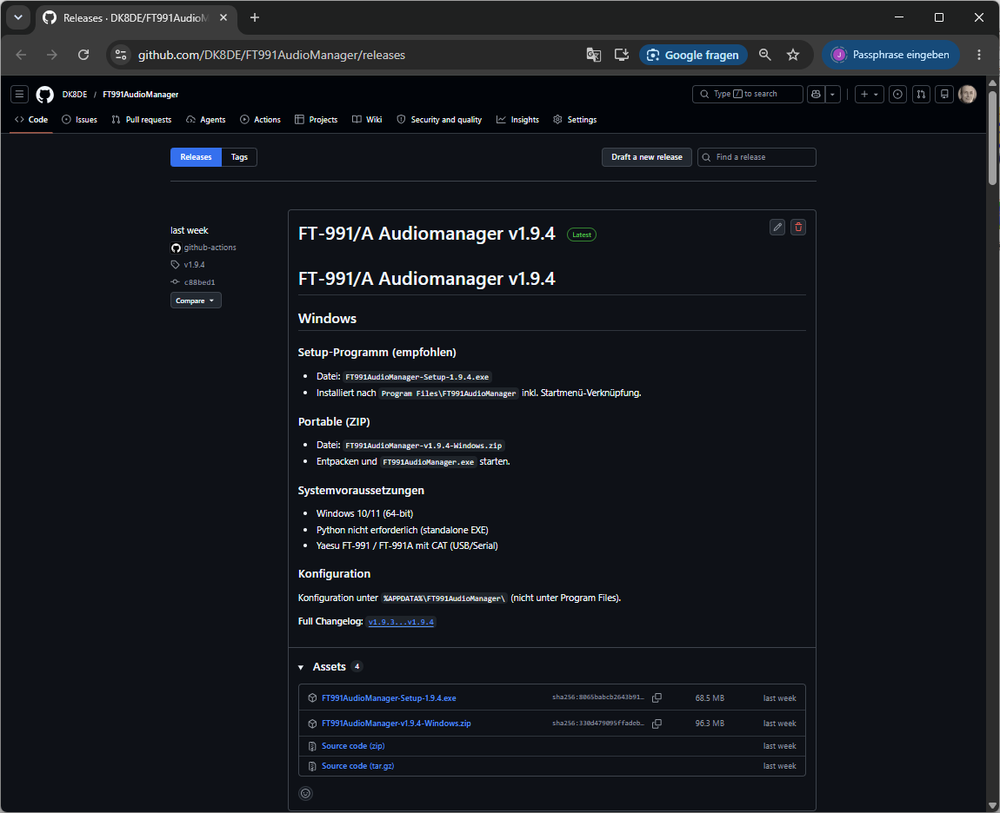
Abb. 1: GitHub Releases-Seite — aktuelles Release und Download-Asset auswählen. (Screenshot-Platzhalter)
Da das Programm von einem privaten Entwickler stammt und nicht über den Microsoft Store verteilt wird, kann Windows das Programm als unbekannt einstufen:
| Meldung | Was tun? |
|---|---|
| Windows SmartScreen („Windows hat den PC geschützt … Unbekannter Herausgeber“) | Auf Weitere Informationen klicken → Trotzdem ausführen wählen |
| Antivirus / Defender beim Download | Datei als vertrauenswürdig bestätigen oder Ausnahme hinzufügen |
| Blockade bei der Installation | Installer mit Rechtsklick → Als Administrator ausführen (falls nötig) und erneut bestätigen |
Das ist bei selbst gebauten Amateurfunks-Programmen normal und bedeutet nicht automatisch, dass die Software schädlich ist. Lade das Programm nur von der offiziellen GitHub-Seite oben herunter.
Nach der Installation starte FT-991/A Audiomanager über das Startmenü oder die Desktop-Verknüpfung. Beim ersten Start sind noch keine CAT-Einstellungen gespeichert — das ist erwartet.
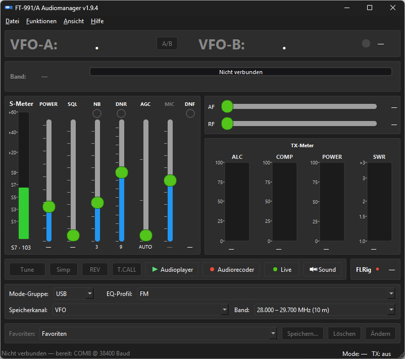
Abb. 2: Hauptfenster ohne CAT-Verbindung. (Screenshot-Platzhalter)
Strg+E)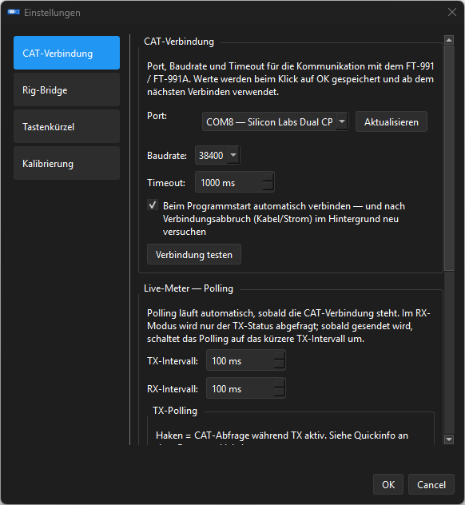
Abb. 3: Einstellungen → CAT-Verbindung — Port, Baudrate, Verbindung testen. (Screenshot-Platzhalter)
Wichtig — zwei gleich aussehende COM-Ports
Am FT-991(A) erscheinen unter Windows typischerweise zwei COM-Ports:
Port Bedeutung Enhanced COM Port ✅ CAT-Schnittstelle — diesen Port verwenden! Standard COM Port ❌ CAT TIMING / TX-Trigger — nicht für diese Software Wenn du unsicher bist: Port wählen → Verbindung testen (siehe unten). Reagiert das Funkgerät nicht, den anderen Port probieren.
Die Werks-Baudrate für CAT ist 38400.
Am FT-991 / FT-991A:
CAT RATEIn der App (Datei → Einstellungen… → CAT-Verbindung) muss die Baudrate identisch sein (Standard: 38400).
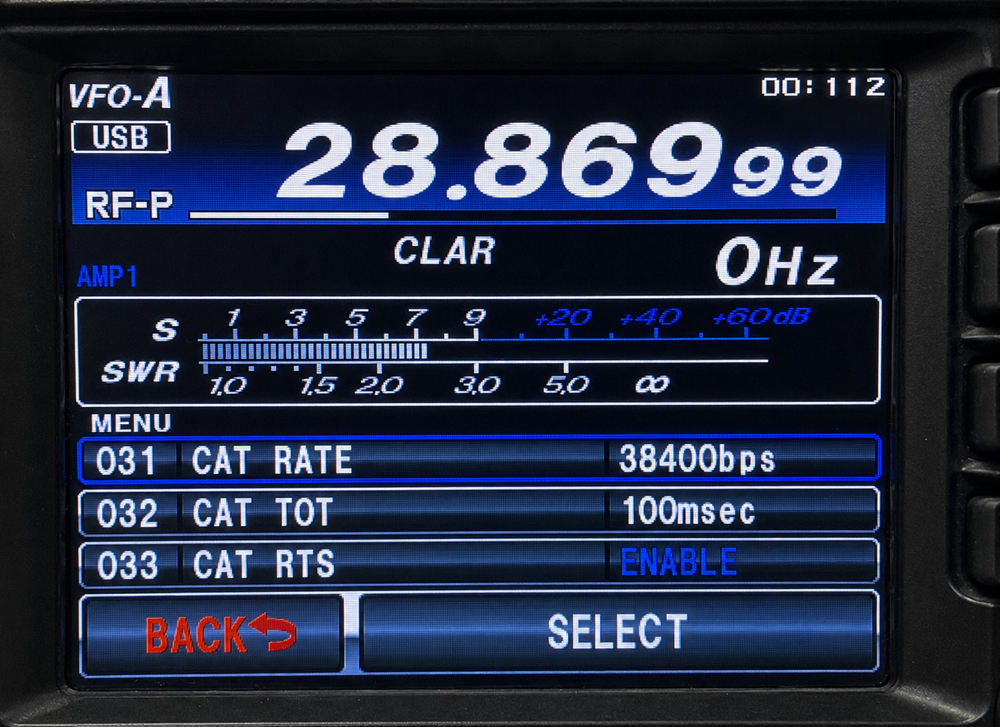
Abb. 4: Funkgerät — Menü 031 „CAT RATE“ auf 38400. (Screenshot-Platzhalter)
In den Einstellungen unter CAT-Verbindung:
Wenn alles richtig eingestellt ist, sollte nach Datei →
Verbinden (Strg+V):
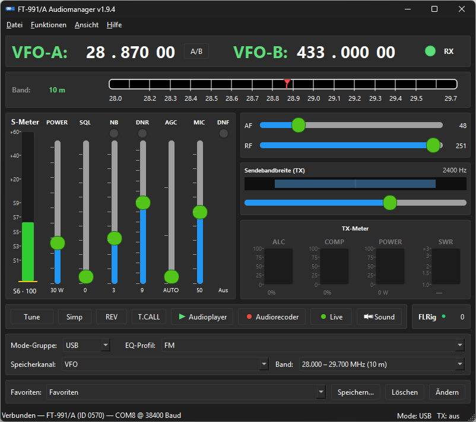
Abb. 5: Hauptfenster mit aktiver CAT-Verbindung — Frequenz, Mode, Meter, Statusleiste. (Screenshot-Platzhalter)
Die Audio-Zuordnung ist entscheidend für Audio-Player, Audio-Recorder und Live‑PC Funk.
Öffne: Funktionen → Soundeinstellung…
(Strg+Shift+S)
oder klicke im Hauptfenster in der Funksteuerungsleiste auf
Sound.
Typische Zuordnung bei Nutzung des USB Audio CODEC des Funkgeräts:
| Nr. | Einstellung | Gerät (Beispiel) |
|---|---|---|
| 1 | Aufnahme-Gerät | Microfon (USB Audio CODEC) |
| 2 | Sende-Ausgabe | Lautsprecher (USB Audio CODEC) |
| 3 | PC-Ausgabe | Deine PC-Soundkarte / Lautsprecher (zum Vorhören am PC) |
Stelle für jedes Gerät die gewünschte Lautstärke ein.
Optional: Ausgabe Mithören — während einer CAT-Sendung (Player/Recorder) wird der Ton zusätzlich auf die PC-Ausgabe geschaltet.
| Nr. | Einstellung | Gerät (Beispiel) |
|---|---|---|
| 1 | PC-Mikrofon für Live | Dein PC-Mikrofon, mit dem du sprechen willst |
| 2 | Monitor | Deine PC-Lautsprecher oder Kopfhörer (Mithören) |
| 3 | Funk-Eingabe | Lautsprecher (USB Audio CODEC) (Empfang vom Funk →
PC) |
| 4 | Funk-Ausgabe / Sende-Ausgabe Live | Microfon (USB Audio CODEC) (deine Stimme → Funk) |
Hinweis: Die exakten Gerätenamen können je nach Windows-Treiber leicht abweichen (z. B. „Yaesu USB Audio“). Wähle jeweils das Gerät, das zum USB Audio CODEC des Funkgeräts gehört.
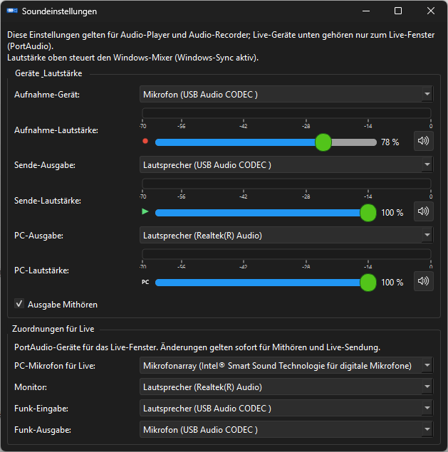
Abb. 6: Soundeinstellungen — Geräte & Lautstärke sowie Zuordnung für Live‑PC Funk (ein Fenster). (Screenshot-Platzhalter)
Mit korrekter CAT-Verbindung und Sound-Zuordnung ist die Grundkonfiguration fertig. Die folgenden Kapitel beschreiben alle Fenster und Funktionen im Detail.
| Aktion | Menü / Tastenkürzel |
|---|---|
| Verbinden | Datei → Verbinden — Strg+V |
| Trennen | Datei → Trennen — Strg+T |
| Einstellungen | Datei → Einstellungen… — Strg+E |
Auto-Connect: In den Einstellungen kann Beim Programmstart automatisch verbinden aktiviert werden. Bei Verbindungsabbruch versucht die App im Hintergrund alle 2 Sekunden, still wieder zu verbinden — bis du manuell Trennen wählst.
Nach dem Verbinden schreibt die App das gewählte EQ-Profil ins Funkgerät, lädt Speicherkanäle (oder nutzt einen Cache) und startet das Meter-Polling.
Das Hauptfenster ist die zentrale Steuerzentrale — VFO, Pegel, Profile und Schnellzugriffe.
Abb. 7: Hauptfenster — Gesamtansicht mit VFO, Band-Streifen, Meter, Funkleiste, Favoriten. (Screenshot-Platzhalter)
Unter der VFO-Anzeige:
Empfang (links):
| Anzeige | Bedeutung |
|---|---|
| S-Meter | Signalstärke |
| SQL | Squelch |
| NB | Noise Blanker |
| DNR | DSP-Rauschunterdrückung |
| AGC | Automatische Verstärkungsregelung (AUTO / FAST / MID / SLOW) |
| MIC | Mikrofonpegel (Anzeige) |
| DNF | DSP-Notch-Filter |
| AF / RF | Audio- und RF-Verstärkung (schiebbar, schreibt ans Funkgerät) |
| Sendebandbreite TX | SSB/CW/DATA-Bandbreite (nur in passenden Modi) |
Sendung (rechts):
| Anzeige | Bedeutung |
|---|---|
| POWER | Sendeleistung (PC) — auch unter TX änderbar |
| ALC, COMP, POWER, SWR | TX-Meter (SWR auf 2 m/70 cm im Programm ausgeblendet — Front-Panel des Funkgeräts ist maßgeblich) |
| Taste | Funktion |
|---|---|
| Tune | Antennentuner starten |
| Simp / RPT+ / RPT− | Repeater-Shift (FM/C4FM) |
| REV | Relais-QRG tauschen (Eingang ↔︎ Ausgang) |
| T.CALL | 1750-Hz-Rufton — Taste gedrückt halten |
| Audioplayer | Audio-Player-Fenster öffnen |
| Audiorecorder | Audio-Recorder-Fenster öffnen |
| Live | Live‑PC Funk-Fenster öffnen |
| Sound | Soundeinstellungen öffnen |
| FLRig (LED) | Status der Rig-Bridge (grün = Server aktiv) |
| Eintrag | Funktion |
|---|---|
| Einstellungen… | CAT, Rig-Bridge, Kalibrierung (siehe Kapitel 10) |
| Verbinden | CAT-Verbindung öffnen |
| Trennen | CAT trennen, UI zurücksetzen |
| Beenden | Programm beenden |
Strg+Shift+E)Zentrale TX-Audio-Konfiguration für das Funkgerät.
Kopfzeile: EQ-Profil wählen, Betriebsart, Live-Sync-Status
Profil-Verwaltung: Speichern, Speichern unter…, Umbenennen, Löschen, Export/Import (JSON)
Bereiche (je nach Modus):
Grundwerte
Parametric MIC EQ — Normal (EX119–127)
Interaktive Kurve: Punkt ziehen = Frequenz/Level, hellblauer Rand =
Bandbreite, Rechtsklick = Band ein/aus
Parametric MIC EQ — Processor (EX128–136)
Aktiv wenn Speech Processor eingeschaltet ist
Erweiterte Einstellungen
SSB Low/High Cut, AM/FM Carrier-Level, Mic-Quelle (Front/Rear), DATA
TX-Level
Änderungen werden automatisch (debounced) ans Funkgerät geschrieben. Während TX pausiert der Sync.
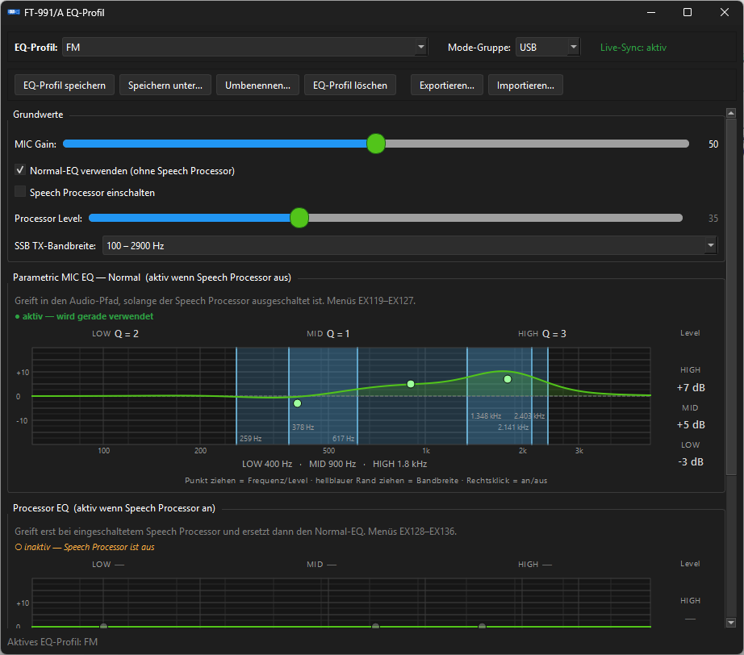
Abb. 8: Equalizer-Fenster — Grundwerte und EQ-Kurve. (Screenshot-Platzhalter)
Strg+Shift+S)Siehe Kapitel
3.
Zusätzlich: Lautstärkeregler pro Gerät und Ausgabe
Mithören.
Strg+Shift+A)Wiedergabe von MP3 und WAV über die CAT-Schnittstelle mit automatischem PTT.
| Bereich | Funktion |
|---|---|
| Ordner | Verzeichnis mit Audiodateien wählen |
| Dateiliste | Reihenfolge per Drag & Drop ändern |
| Play PC | Lokales Vorhören am PC ohne Sendung |
| Wiedergabe | Start / Pause / Stopp — sendet über Funk (DATA-FM + passende Menüs) |
| Pausen | Wartezeit zwischen Dateien (1–600 s) |
| Modus | Nach jeder Datei stoppen / alle nacheinander |
| Kontest-Loop | Wiederholung der Playlist |
| Lautstärke | Sende- und PC-Lautstärke |
Beim Start mit CAT-Verbindung stellt die App automatisch DATA-FM und die Menüs 048 / 070 / 072 / 077 / 109 für PC-Audio ein.
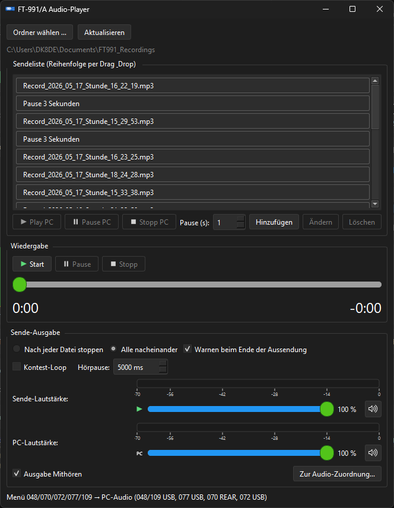
Abb. 9: Audio-Player-Fenster. (Screenshot-Platzhalter)
Strg+Shift+R)| Bereich | Funktion |
|---|---|
| Aufnahme | Empfang vom Funk-USB-CODEC als MP3 aufzeichnen |
| Replay | Aufnahme einmalig per CAT-TX wieder abspielen |
| Play PC | Datei lokal am PC anhören |
| Format | MP3-Bitrate wählbar |
| Ordner | Aufnahme-Verzeichnis, Explorer öffnen |
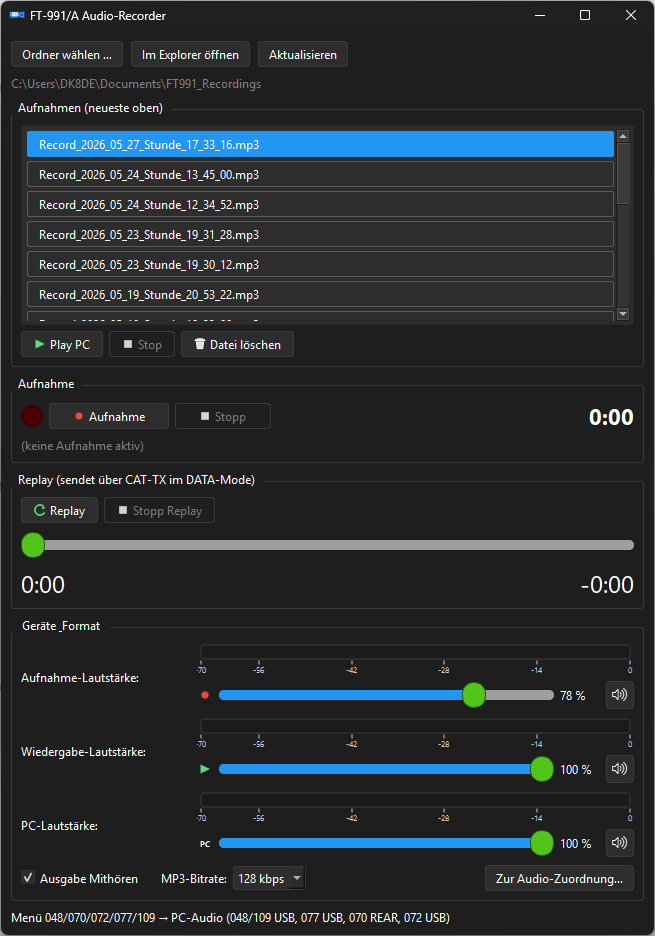
Abb. 10: Audio-Recorder-Fenster. (Screenshot-Platzhalter)
Strg+Shift+L)Sprache vom PC-Mikrofon über DSP ins Funkgerät — ideal für Headset-Betrieb.
| Bereich | Funktion |
|---|---|
| Siebenband-EQ | Kurven-Editor, EQ gesamt ein/aus |
| Lautstärke-Streifen | Mic·Send, Monitor, Funk-Eingabe, Funk-Ausgabe mit Pegelanzeige |
| TX Noise Gate | Rauschunterdrückung vor dem Senden (Schwellwert, Attack, Hold, Release) |
| Kompressor | Threshold, Ratio, Attack, Release, Make-up |
| RX Noise Gate | Rauschgate für den Funk-Mithör-Eingang |
| PTT | Taste gedrückt halten — Strg+Y |
| PTT halten | Einrasten — Strg+X |
| Live-Profil | Konfiguration speichern, laden, löschen |
| AFL | Eigene NF abhören — bearbeitetes Mikro auf Monitor |
| Audio Zuordnung | Öffnet die Soundeinstellungen |
Live startet nicht, wenn gleichzeitig Player oder Recorder senden/aufnehmen.
Sicherheitshinweis: Bei geschlossenen Audio-Leitungen zwischen PC und Funk wird eine galvanische Trennung im Audio-Pfad empfohlen (siehe README).
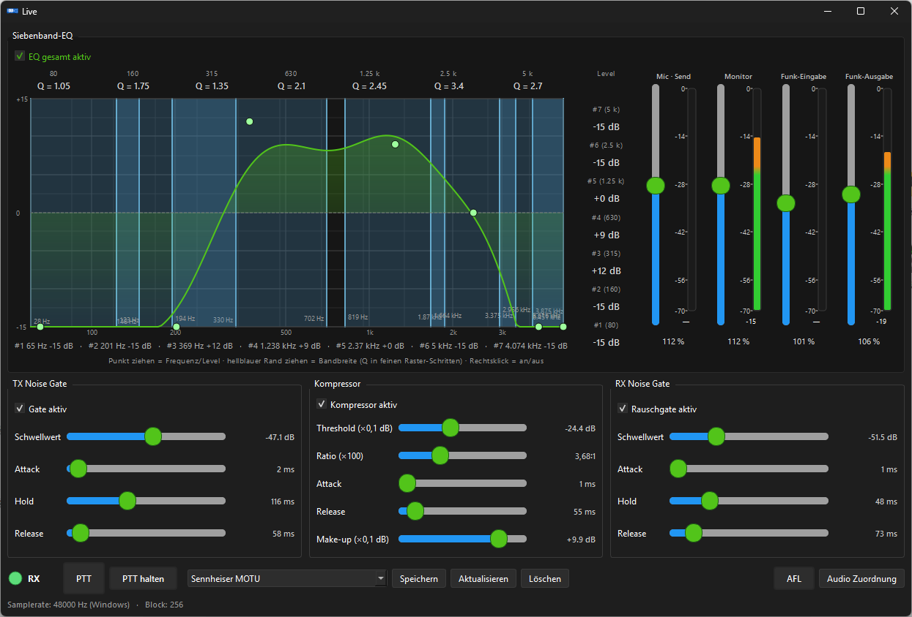
Abb. 11: Live‑PC Funk — EQ, Gates, Kompressor, PTT. (Screenshot-Platzhalter)
Strg+Shift+K)Editor für alle 100 Speicherkanäle des FT-991.
| Funktion | Beschreibung |
|---|---|
| Tabelle | Nr., Name, RX MHz, Mode, Offset, Ton, CTCSS/DCS, Power/SQL (lokal), Notiz |
| Filter | Suche, Band (2 m, 70 cm, HF, leer, belegt) |
| Neu laden / Speichern | Kanäle vom Funkgerät lesen bzw. schreiben |
| Export / Import | JSON oder CSV |
| Kanal → VFO / VFO → Kanal | Inhalt zwischen VFO und Speicherplatz tauschen |
| Reihenfolge | Kanäle verschieben, duplizieren, Lücken schließen |
CAT-Verbindung erforderlich. Vor Schreibvorgängen wird automatisch eine Sicherung erstellt.
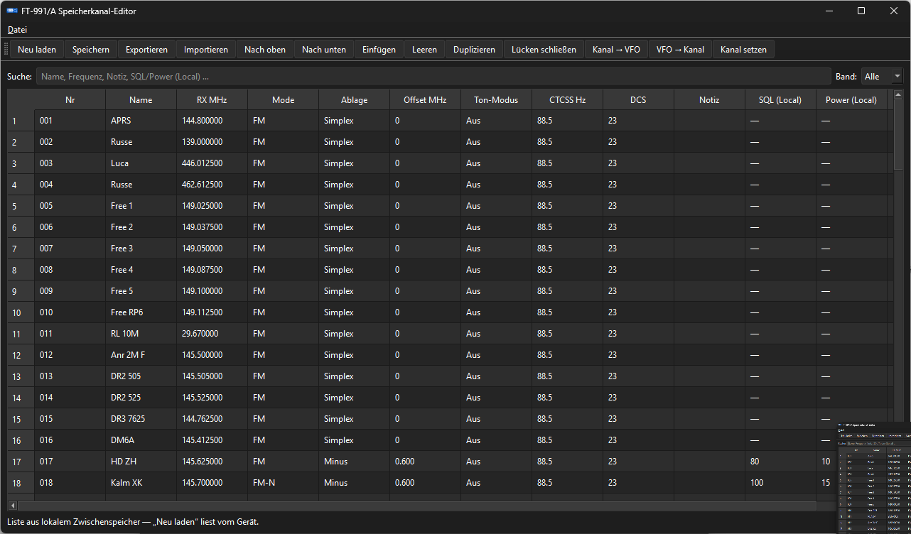
Abb. 12: Speicherkanal-Editor. (Screenshot-Platzhalter)
| Eintrag | Funktion |
|---|---|
| CAT-Log anzeigen | CAT-Protokoll-Fenster ein-/ausblenden (Strg+L) |
| Sprache → Deutsch / English | Oberflächensprache umschalten |
Die Anwendung verwendet dauerhaft das Dark Theme.
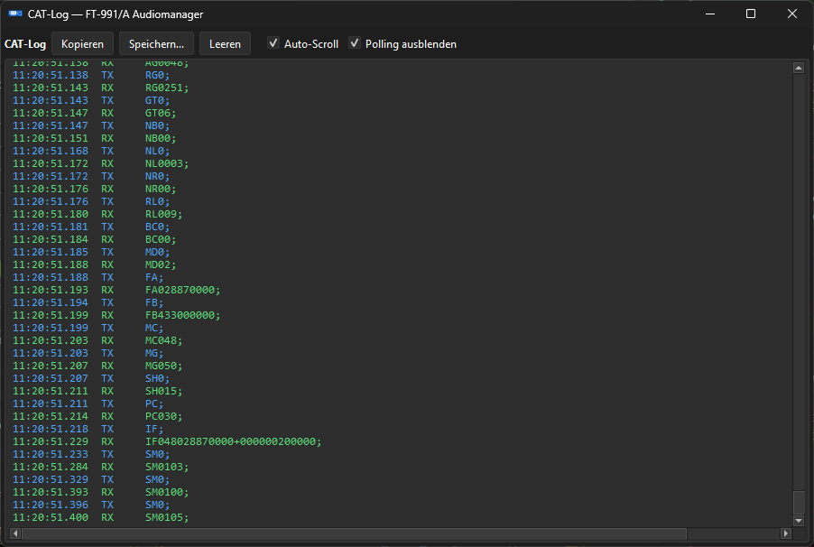
Abb. 13: CAT-Log-Fenster mit TX/RX-Einträgen. (Screenshot-Platzhalter)
| Eintrag | Funktion |
|---|---|
| Version | About-Fenster: Version, Autor, Datum, Lizenz (Apache 2.0), GitHub-Link |
| Anleitung | Öffnet das Handbuch-PDF des aktuellen Releases auf GitHub im Browser (Deutsch oder Englisch je nach Ansicht → Sprache) |
| Update prüfen… | Vergleich mit dem neuesten GitHub-Release; Link zum Download bei neuer Version |
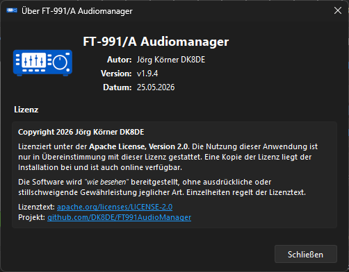
Abb. 16: Hilfe → Version (About-Fenster). (Screenshot-Platzhalter)
Datei → Einstellungen… — drei Bereiche in der linken Navigation:
(Siehe Abb. 3 für den CAT-Bereich.)
Ermöglicht die Nutzung von WSJT-X, FLRig und anderen CAT-Clients parallel zur App.
127.0.0.1), Port (Standard
12345)Empfohlene Reihenfolge: Zuerst in der App verbinden → dann Rig-Bridge starten → in WSJT-X Radio → FLRig mit gleichem Host/Port.
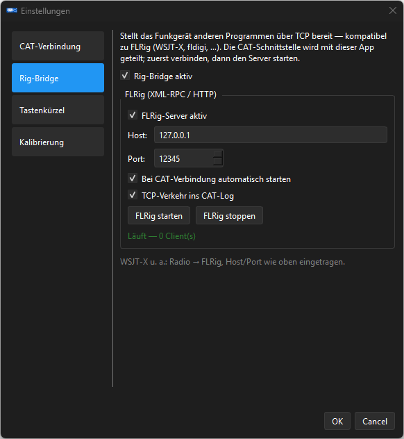
Abb. 14: Einstellungen → Rig-Bridge. (Screenshot-Platzhalter)
S-Meter: Eigene Kurven für Kurzwelle und 2 m/70 cm
PO-Meter (10 m KW): Automatische Kalibrieration der Sendeleistungsanzeige — nur mit geeigneter KW-Antenne am KW-Anschluss und nach Bestätigung des Sicherheitshinweises.
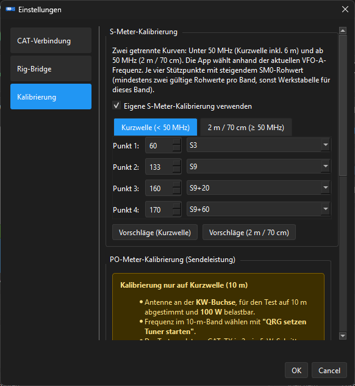
Abb. 15: Einstellungen → Kalibrierung (S-Meter / PO). (Screenshot-Platzhalter)
| Kürzel | Aktion |
|---|---|
Strg+E |
Einstellungen |
Strg+V |
Verbinden |
Strg+T |
Trennen |
Strg+Q |
Beenden |
Strg+L |
CAT-Log |
Strg+Shift+E |
Equalizer |
Strg+Shift+S |
Soundeinstellung |
Strg+Shift+A |
Audio-Player |
Strg+Shift+R |
Audio-Recorder |
Strg+Shift+L |
Live‑PC Funk |
Strg+Shift+K |
Speicherkanäle |
Strg+Y |
Live: PTT halten |
Strg+X |
Live: PTT einrasten |
| Problem | Lösung |
|---|---|
| Keine CAT-Antwort | Richtigen Enhanced COM Port wählen; Menü 031 = 38400; USB-Kabel; Funkgerät eingeschaltet |
| Zwei COM-Ports — welcher? | Verbindung testen in den Einstellungen; bei Fehlschlag anderen Port probieren |
| Frequenz/Mode werden nicht angezeigt | Verbinden (Strg+V); Statusleiste
prüfen |
| Kein Ton beim Player/Recorder | Soundeinstellungen prüfen (Kapitel 3); Menüs 048/070/072/077/109; DATA-FM |
| Live ohne Audio | Live-Gerätezuordnung prüfen; PTT gedrückt halten; Blockierung durch Player/Recorder beenden |
| SmartScreen blockiert | Siehe Kapitel 1.2 |
| Menü | Bezeichnung | Bedeutung für die App |
|---|---|---|
| 031 | CAT RATE | Baudrate CAT (38400 Werkstandard) |
| 048 | USB Audio Routing | PC-Audio-Pfad |
| 070 | Mic Input | Mikrofonquelle (REAR/USB) |
| 072 | USB Audio Codec | USB-Codec-Auswahl |
| 077 | USB Audio Destination | Ziel der USB-Audio-Ausgabe |
| 109 | USB Audio Source | Quelle der USB-Audio-Eingabe |
| PR1 | Parametric MIC EQ | Normal-EQ ein/aus |
| EX119–127 | Normal-EQ Bänder | Parametric EQ (Speech Processor aus) |
| EX128–136 | Processor-EQ Bänder | Parametric EQ (Speech Processor an) |
Ende der Bedienungsanleitung — FT-991/A Audiomanager